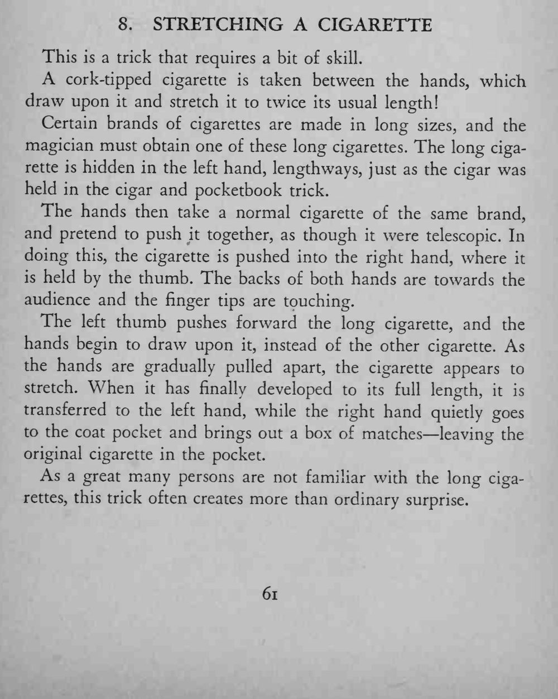

两手捏住一支香烟往两边拉，香烟竟被一点点拉长，最后变成原来两倍长。
两支烟必须同品牌、粗细颜色一致；拉开的速度要稳，别让人看见接缝。

This is a trick that requires a bit of skill. cork-tipped cigarette is taken between the hands, which draw upon it and stretch it to twice its usual length! Certain brands of cigarettes are made in long sizes, and the magician must obtain one of these long cigarettes. The long cigarette is hidden in the left hand, lengthways, just as the cigar was held in the cigar and pocketbook trick. The hands then take a normal cigarette of the same brand, and pretend to push it together, as though it were telescopic. In doing this, the cigarette is pushed into the right hand, where it is held by the thumb. The backs of both hands are towards the audience and the finger tips are touching. The left thumb pushes forward the long cigarette, and the hands begin to draw upon it, instead of the other cigarette. As the hands are gradually pulled apart, the cigarette appears to stretch. When it has finally developed to its full length, it is transferred to the left hand, while the right hand quietly goes to the coat pocket and brings out a box of matches leaving the original cigarette in the pocket. As a great many persons are not familiar with the long cigarettes, this trick often creates more than ordinary surprise.